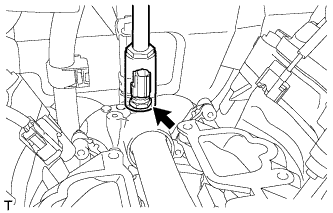

ДАТЧИК ТЕМПЕРАТУРЫ ОХЛАЖДАЮЩЕЙ ЖИДКОСТИ > СНЯТИЕ |
| 1. СНИМИТЕ ВПУСКНОЙ КОЛЛЕКТОР |
Снимите впускной коллектор (Нажмите здесь).
| 2. СНИМИТЕ ДАТЧИК ТЕМПЕРАТУРЫ ОХЛАЖДАЮЩЕЙ ЖИДКОСТИ |
|  |
Отсоедините разъем датчика.
С помощью удлиненной торцевой головки на 19 мм снимите датчик.
Снимите прокладку с датчика.